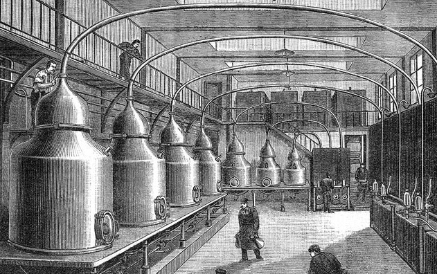
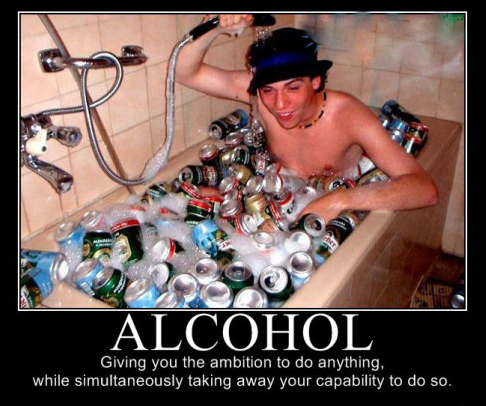
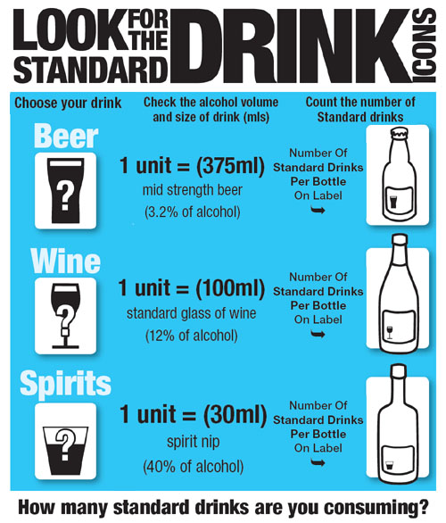

ALCOHOL
OVERVIEW:
Jugs that held beer and wine have been found dating
back to 3500
B.C. It was easy enough for prehistoric peoples
to make alcohol. Mixtures of water and berries left
alone
in the sun turned into alcohol. Alcohol
had its
medicinal
qualities as well. It was used as a disinfectant,
to
stimulate the flow of milk in nursing mothers, and to
remedy
a variety of illnesses.
By the Middle Ages, the upper classes consumed
alcohol in abundance, while the peasant population made
beer at home. In Italy and France, wine became an
important product in commercial markets and continued
to be an integral part of the European economy throughout
the Renaissance period. Home brewing was largely
replaced
by the commercial manufacture of beer and
wine
in Europe by the early eighteenth century.
The first distillery in the United States opened in
New York in 1640. Mass production, international trade,
and expanding commercialism facilitated an increase in
alcohol use into the twentieth century and brought with
it concern over alcohol abuse.
In the United States there have been historical
increases and decreases in alcohol use. There were high
periods of alcohol consumption during the Civil War,
World War I, and World War II.But Alcohol remains the most commonly used
legal drug, and consumption of alcohol by young people
is very high.

CHEMICAL/ORGANIC COMPOSITION:
The chemical composition for ethanol or ethyl alcohol,
otherwise known as alcohol, is C
2
H
OH. This means
it is composed of two atoms of carbon, six atoms of
5
hydrogen, and one oxygen atom. Ethanol is colorless and
highly flammable. Alcohol is too strong to drink by
itself, so it is mixed with water and other substances to
create alcoholic beverages. Ethyl alcohol is the only safe
alcohol to drink. Other alcohols like methanol (wood
alcohol; CH
OH) and isopropyl alcohol [rubbing alcohol;
(CH
3
)
2
3
ALCOHOL
OFFICIAL NAMES: Ethyl alcohol, ethanol, grain alcohol
STREET NAMES: Booze, hooch, juice, sauce, spirits
DRUG CLASSIFICATIONS: Not classified, depressant
CHOH] are highly toxic and poisonous to the
body.
Alcohol is produced by fermenting fruits, vegetables,
and grains. Fermentation occurs when sugar in
berries
or grains is combined with yeast. An
enzyme is
released
that changes the sugar into carbon dioxide and
alcohol.
When
the combination of sugar,
yeast, and
berries or grains is combined with yeast. An enzyme is
released that changes the sugar into carbon dioxide and
alcohol. When the combination of sugar, yeast, and
berries reaches an alcohol concentration point of 14%,
fermentation is complete and wine is formed.
Similarly,
when sugar, yeast, and grains such as barley, corn, or rice
are combined and reach an alcohol concentration of
about 6%, beer is made and fermentation stops.
Hard liquor is produced by a process called distillation.
In distillation, liquids that have been fermented are
boiled
and the alcohol is extracted. At
the boiling point,
the
alcohol separates from the fermented liquid to create
a
vapor.
The
vapor is held in a cooling tube until it turns
into
a liquid once again. The
alcohol is then mixed with
water.
Hard liquor is about 60% water.
Whiskey,
rum,
vodka,
scotch, and gin are distilled liquors. These
alcoholic
beverages contain about 50% alcohol. The
percentage
of alcohol in hard liquor is called �proof.� Proof
is
double the amount of pure alcohol, which means that
a
100 proof whiskey contains 50% alcohol. A
4-ounce
glass of wine, a 12-ounce beer, and a 1-ounce shot glass
of hard liquor all have the same amount of alcohol or
alcohol content. Cordials like brandy, port, and liqueurs
are made from wine and have pure alcohol added to
them. Sugar is added to make them sweet, thus hiding
the taste of alcohol and making these drinks seem less
potent than they really are.
MENTAL EFFECTS

Alcohol acts as a depressant on the brain. Blood
carries alcohol to the brain, where it acts on the body’s
central nervous system to slow a person’s mental
responses. There are a variety of mental effects associated
with alcohol consumption. The
more immediate are:
a
lessening of inhibitions, mental relaxation, exaggerated
emotional response to people and situations, extreme
changes
in behavior,
and impaired judgment. Low doses
of
alcohol can cause the release of certain chemicals in
the
brain that can cause a sense of euphoria—a
“high”
that makes alcohol seem like a stimulant. Memory is
sharpened and the ability to think creatively is strengthened,
but when alcohol consumption increases, its seda-
tive effects cause a loss of self-control and inhibition. A
self-conscious individual becomes more confident; a shy
person becomes more talkative. Alcohol also can cause
people to become argumentative or emotionally withdrawn.
Relationship problems can develop. Judgment is
affected
and risk-taking behaviors can result. People are
known
to do things under the influence of alcohol that
they
would never consider doing when sober.
As alcohol consumption increases and levels of alcohol in the blood
rise,
the reflexes are slowed; memory loss and a sense of
confusion
can occur.
Committing crimes or being the
victim
of a crime, domestic violence, child abuse, automobile
accidents, homicide, and suicide are among the
events
related to the consumption of alcohol.
The effects of alcohol are related to the size of the
person and the amount of alcohol in the blood, as well as
to the rate of consumption. After one drink a person
weighing about 150 lb (68 kg) will feel relaxed and
happy. After two drinks in an hour a person will fell less
inhibited. Three drinks will affect a person’s muscle control.
Speech can become slurred and walking may be difficult.
After
four drinks judgment is affected
and the
ability
to reason becomes impaired. Five drinks will
make
speech patterns difficult
to understand and impair
vision.
After
six drinks a person may begin to lose consciousness
and fall asleep. Ten
or more drinks can cause
a
person to fall into a deep sleep also known as “passing
out.”
Here is the Percentage of Alcohol in various Beverages
